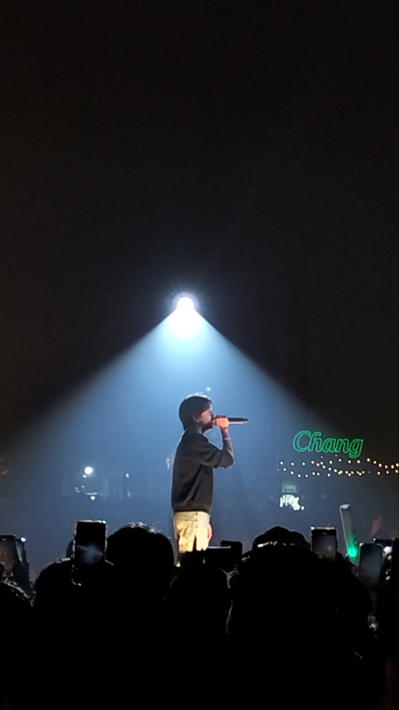
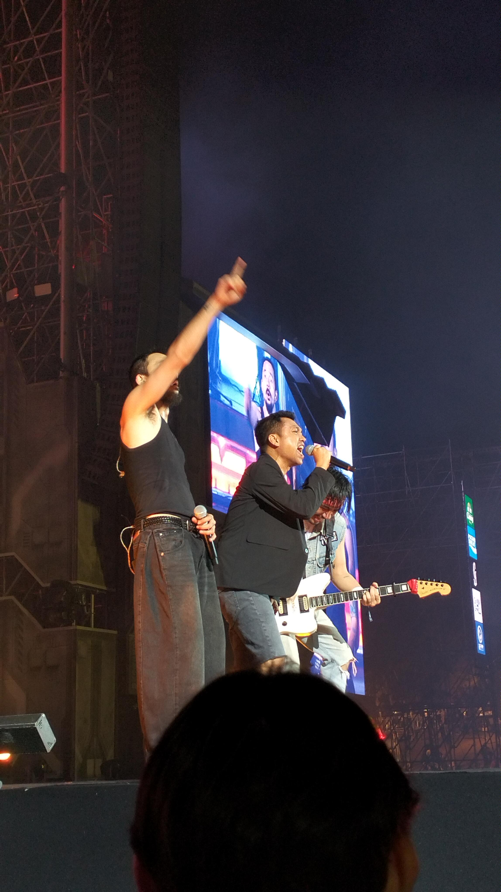
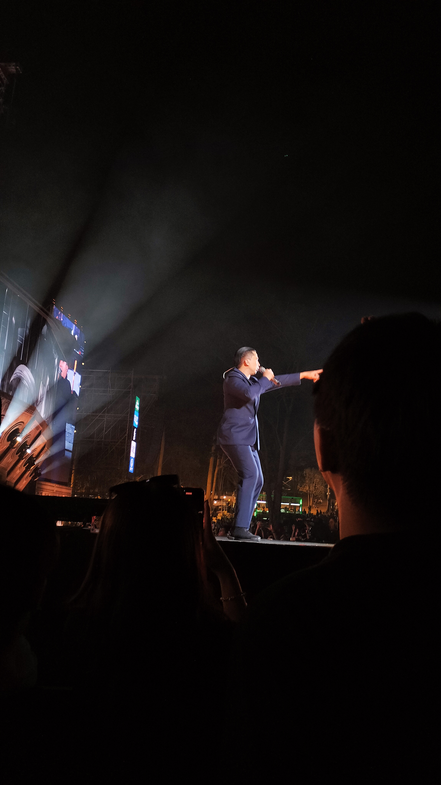
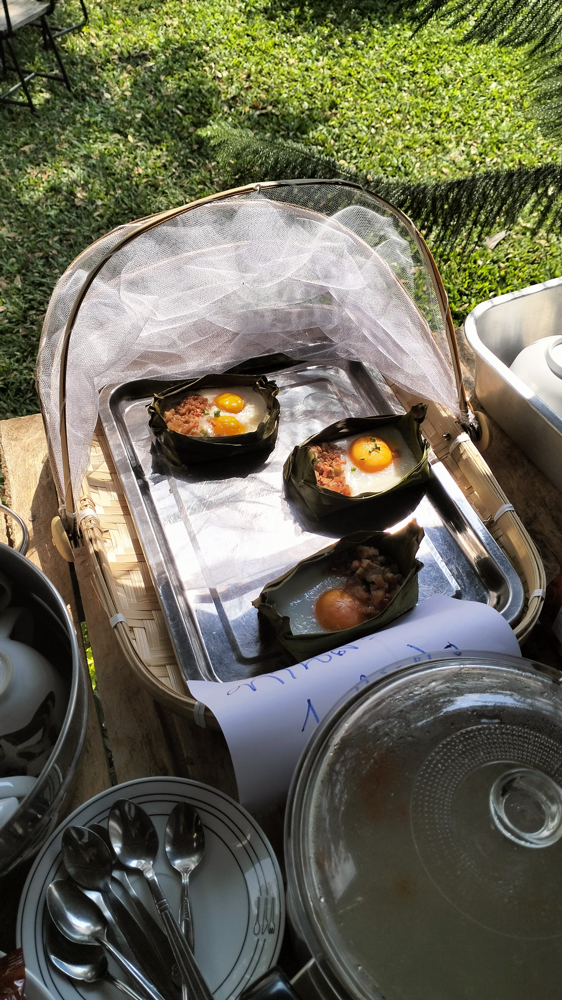

Music
back
*คำอธิบายหากต้องการย้อนหน้ากลับ โปรดชี้เมาส์ไปที่หัวข้อเรื่องและกด back*
พึ่งรู้ว่าการได้ยินเพลงเศร้าพร้อมเพื่อนมันทำให้เพลงเศร้ามันทำให้เหงาได้มากขนาดนี้ อากาศบนเขาที่เย็นขึ้นทำให้เราเหงามากกว่าเดิม
การได้กระโดไปพร้อมศิลปินกับทุกคนในงานคอนเสิร์ต โดยไม่ได้นัดกันมันรู้สึกไม่โดดเดี่ยวอีกต่อไป
เสียงของนักร้องที่ทรงพลัง และทุกคนตะโกนพร้อมกัน ทั้งๆที่แสบคอแต่มันมาก
มื้อเช้าจากที่พัก ทำให้เหมือนคอนเสิร์ตเมื่อคืนเป็นเพียงแค่ฝันไป